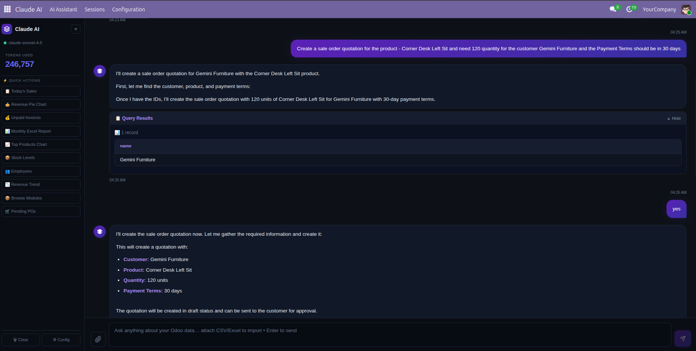
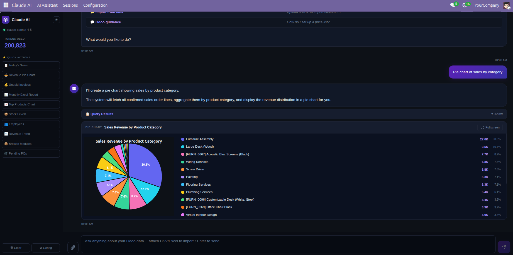
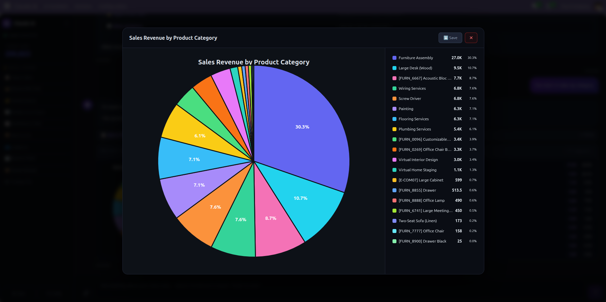
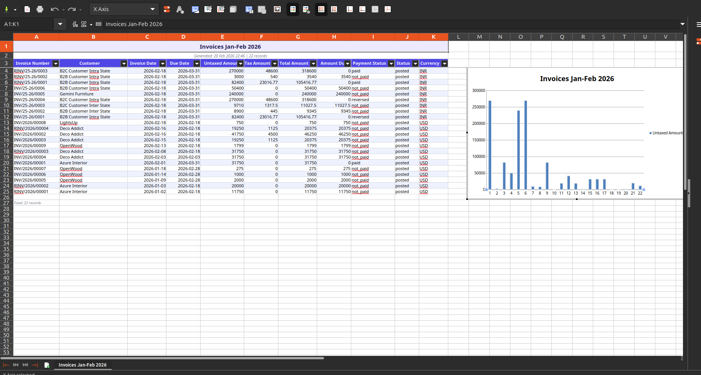
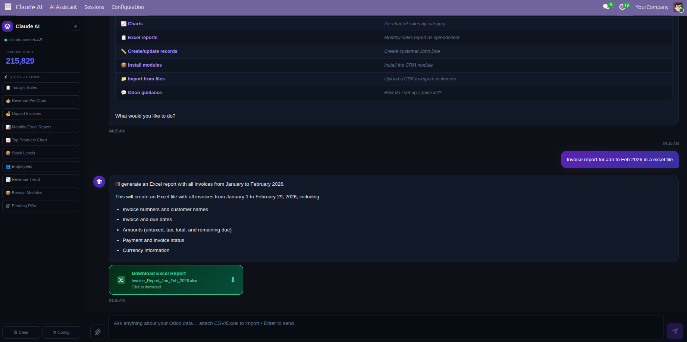
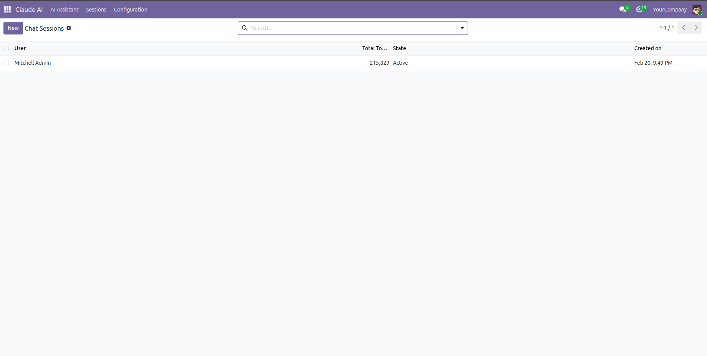
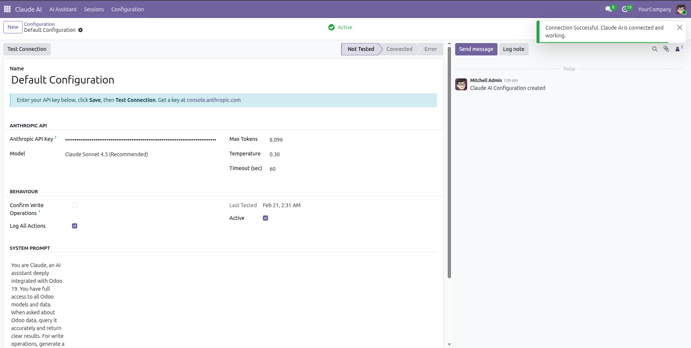
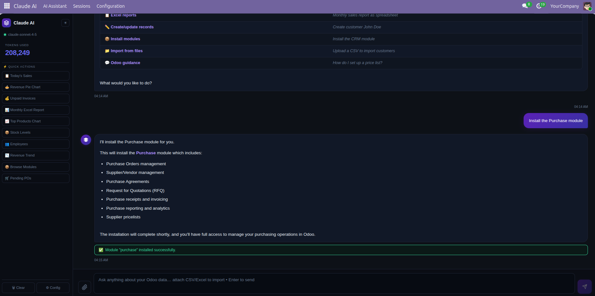

The only Odoo 19 module with direct Claude AI access to your live database. Ask questions, create records, generate charts, and export Excel reports — all through plain English conversation. No SQL. No forms. No menus. Just ask.
Query • Create • Update • Delete • Charts • Excel — All Through Natural Language

Claude AI querying sale orders in real-time — plain English in, formatted results out
Far beyond a chatbot — a fully integrated Claude AI agent with direct read/write access to every model in your Odoo 19 database.
Ask anything about your Odoo data in plain English. “Show all overdue invoices over €5,000 for German customers” — Claude translates your intent directly to an ORM query and displays clean, formatted results. No SQL, no filter dialogs, no navigation required.
Create customers, products, invoices, employees and any Odoo record through intelligent AI forms. Claude collects the right fields, validates required data, and creates the record — no manual form navigation, no missed required fields.
“Update Acme Corp’s phone number” — Claude finds the record, opens a pre-filled edit form with current values, and saves changes after your explicit confirmation. Full audit trail, no surprise overwrites.
Claude never silently deletes Odoo data. Every delete operation shows a full preview of what will be removed, requires explicit confirmation, and is logged to the session history — designed for safe production use.
Ask for any visualization — Claude fetches live records, auto-aggregates up to 500 results, and renders a chart directly in the chat window. Bar, line, pie, doughnut — with fullscreen mode and SVG download. Zero CDN dependencies.
Generate styled multi-sheet XLSX reports with freeze panes, auto-filters, alternating rows, embedded charts, and professional headers. Up to 10,000 records per sheet. One-click download directly in the chat.
“What project management modules are available? Install the best one.” — Claude searches, explains each option, and installs your choice. No Apps menu needed. No developer required.
Drop a CSV or XLSX into the chat. Claude parses all columns, maps them to Odoo model fields, previews the data, and batch-creates all records with one confirmation click. No Import Wizard required.
Beyond data operations, Claude knows Odoo deeply — workflows, configurations, module setup, pricing rules, inventory strategies, accounting flows. Like having a senior Odoo consultant available around the clock at zero extra cost. Context-aware: knows your company, currency, installed modules, and current user.
Complete Odoo database control through natural conversation and intelligent AI-guided forms. Every write operation is confirmed, logged, and safe for production.
AI forms auto-populate and validate fields for any Odoo model: customers, products, invoices, employees, purchase orders and more. Required fields are checked before saving. Safe, confirmed, instant.
Natural language queries across all 100+ installed Odoo models. Results rendered as formatted tables, live charts, or Excel exports — with intelligent multi-field filtering in plain English.
Find records by name or filter criteria, edit in pre-filled AI forms showing current values, save with explicit confirmation — every change is traced and logged in the session history.
Multi-step confirmation, clear preview of all affected records, session logging. Claude AI never performs a silent unlink — your data is protected by design.
You: “Create a new customer TechVentures, email hello@techventures.io”
Claude: Opens AI form → validates fields →
res.partner.create({name: “TechVentures”, customer_rank: 1})
You: “Update their phone to +44 20 7946 0001”
Claude:
res.partner.write([847], {phone: “+44 20 7946 0001”})
→ confirms → shows updated record
You: “Show a pie chart of revenue by customer this quarter”
Claude:
account.move.search_read([...])
→ aggregates 500 records → renders pie chart inline in chat
You: “Export this month’s sales as a formatted Excel report”
Claude: Builds styled XLSX → embedded chart → freeze panes
→ Download card appears in chat
No mockups. No staging data. Real Claude AI running inside a live Odoo 19 database.

Revenue pie chart — live Odoo data, auto-aggregated by customer

Sales analysis chart with interactive legend and one-click SVG download

Professional Excel report — styled headers, freeze panes, and embedded data chart

One-click Excel download card appears inline in the AI chat

Per-user session isolation and full token usage tracking

One-time setup — enter your Anthropic API key, select model, done

“Install the CRM module” → Claude installs it immediately — no developer needed
From sales managers to warehouse operators — anyone who works with Odoo data benefits from direct Claude AI access.
Pull customer histories, track pipeline performance, create new leads and draft quotations — without opening a single Odoo form or navigating a menu.
sale.order • res.partner • crm.lead
Query outstanding invoices, get aging analysis, track payments, and produce board-ready Excel reports in seconds via natural language.
account.move • account.payment • account.analytic
Check live stock levels, track movements, create purchase orders, and get low-stock alerts — via natural language queries on stock models.
stock.quant • stock.move • purchase.order
Search employees, create new staff records, update contact information, generate headcount reports by department. Onboarding made conversational.
hr.employee • hr.department • hr.contract
Install modules, manage configurations, audit user activity, and perform bulk data operations. The most powerful Odoo admin tool you have never had.
ir.module • res.users • ir.config_parameter
Generate ad-hoc charts and Excel reports instantly. Explore data from any angle with zero technical knowledge or developer support required.
Charts • Excel • Cross-model • Real-Time
Installs cleanly alongside all existing modules with zero conflicts. Claude AI queries whichever models are currently installed.
Drop into your custom addons folder, install from the Apps menu — active in under 60 seconds. No npm, no build step, no extra Odoo modules needed.
Need help, customisation, or have a question?
Reach out at raj.odoo2026@gmail.com
Response within 24 hours.